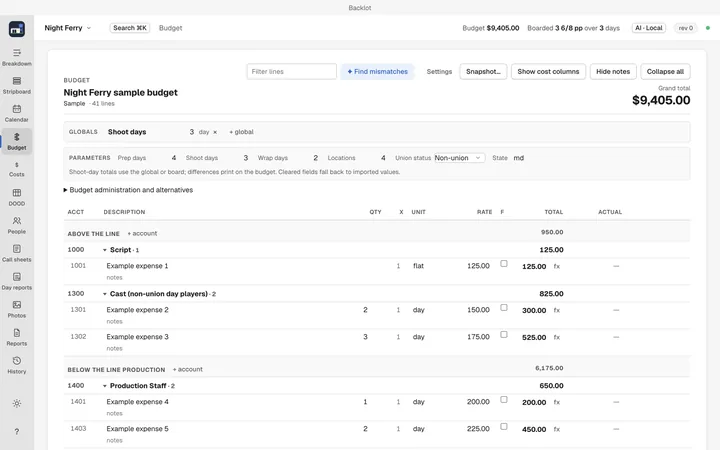
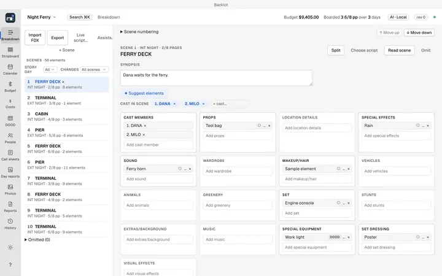
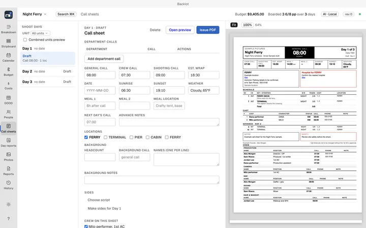
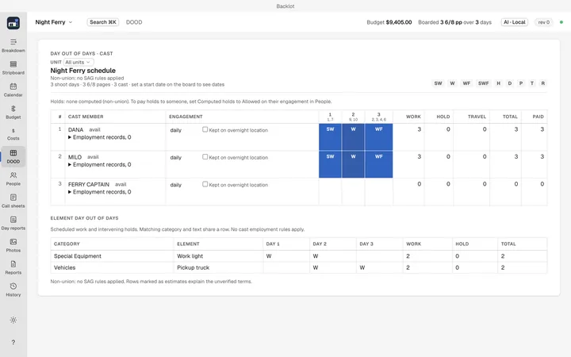

What it does
- Budget
- Fringes, globals and budget alternatives, plus purchase orders, invoices and petty cash posted against each line, so every account shows committed, spent and variance.
- Script breakdown
- Import a Final Draft or Fountain draft. When a revised draft comes in, Backlot shows what changed before it touches anything and marks the pages in the standard revision colors.
- Stripboard
- Drag strips, sort by location or time of day, keep named board alternatives, pin shoot days to a calendar, and get a cast and element day out of days from the same board.
- Call sheets and reports
- Issue a call sheet as a PDF, send it by email or text, and see who confirmed. Daily reports, a take log and a one-click production book come from the same project.
- Sharing a project
- Save the whole project as one file and email or AirDrop it. When it comes back, Backlot shows what changed and replaces your copy after backing it up.
- AI, if you turn it on
- The assists run on a local Ollama model, your own API key or your ChatGPT plan. Sign in with ChatGPT and Backlot's assists use your ChatGPT plan. Backlot itself is free. Learn more
- Claude and MCP
- A built-in MCP server lets Claude and other MCP clients read and edit the same project, with the same validation and undo history as the app.
See it work
Full-length versions are in the user guide.
More screenshots








Optional extras
Two things need setting up first.
- Gorilla workbook and Movie Magic budget and schedule XML export need an integration you configure yourself. Until then those formats are turned off. PDF and CSV export work without it.
- Email goes through your own Resend account or Google Workspace.
Questions
Is Backlot free?
Yes. It is free and open source under GPL-3.0.
Where is my project stored?
In one project file on your own disk. Nothing needs an account, and you can email or AirDrop the file to your crew.
Can it read my script?
Yes. It imports Final Draft and Fountain drafts, and shows what changed when a revised draft comes in.
Install
Open the disk image and drag Backlot to Applications. Needs an Apple Silicon Mac with macOS 13 Ventura or later.
The Backlot user guide has screenshots and captioned walkthroughs. You can also download the whole guide to read offline.
Homebrew, source code and checksums
Homebrew
brew tap MIM18-code/backlot brew trust MIM18-code/backlot brew install --cask backlot
Homebrew asks you to trust a third-party tap once, which is the second line. Update later with brew upgrade --cask backlot.
- Source codeGPL-3.0, 3.4 MB
- SHA-256 checksumsApp release files
- Guide checksumsSHA-256 for the guide ZIPs
- Release notesOn GitHub
DMG SHA-256: 68d84ebc1bda6488b518afa819981fe18220065cbb6ae279c0c80bbb3f24b949